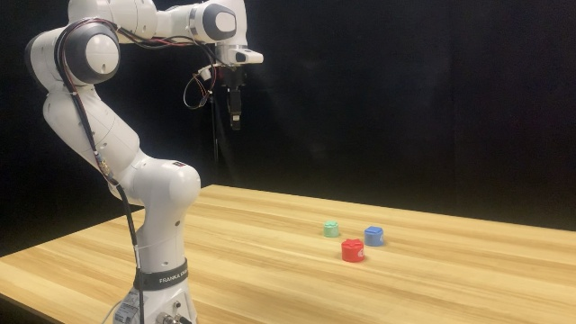

Highlight

End-to-End PIDM: We propose an end-to-end model Seer that predicts actions using inverse dynamics models conditioned on the robot's forecasted visual states, termed as Predictive Inverse Dynamics Models (PIDM).
Scalability: Seer is initially pre-trained on large-scale robotic datasets, such as DROID, and can be adapted to downstream tasks with a little fine-tuning data. With an increasing model size, Seer achieves a better performance.
Effectiveness: Seer outperforms state-of-the-art methods across both simulation and real-world experiments. It demonstrates superior generalization for novel objects, lighting conditions, and environments under high-intensity disturbances. Notably, Seer sets a new state-of-the-art on CALVIN ABC-D benchmark, achieving an average length of 4.28.
Pipeline of Seer
Seer consists of three parts: Multi-Modal Encoder, Conditional Visual Foresight and Inverse Dynamics Prediction. In Multi-Modal Encoder, Seer incorporates the foresight token [FRS] and the action token [INV]. Both tokens attend to the RGB images, language tokens, and robot state tokens, with [INV] also attending to [FRS]. In Conditional Visual Foresight, the encoded [FRS], along with new mask tokens, aims to reconstruct future RGB images. In Inverse Dynamics Prediction, the encoded [INV] and other tokens speculate intermediary actions.
Real World Wipe Board Task
In this task, the robot needs to (1) grasp the brush, and (2) sweep all the chocolate balls into the dustpan.
Seer is capable of:
(0:04) wiping multi clusters of chocolate balls.
(0:11) remaining still when nothing left on the board.
(0:13) keep wiping when placing additional chocolate balls.
(0:19) keep wiping when placing new chocolate balls.
(0:22) wiping all the randomly scattered objects.
Real World Stack Cups Task
In this task, the robot needs to (1) pick the middle
cup, (2) cover the small one, (3) pick the big one, and (4) cover the middle one.
Seer demonstrates:
(0:09) strong tracking ability and position generalization.
(0:21) re-covering cups under disturbation.
Real World Flip White Bowl Task
In this task, the robot needs to (1) pick an
overturned bowl, and (2) place it on the coaster.
Seer is robust against:
(0:09) flashing lights.
(0:21) distractions with identical shapes.
Generalization
Seer could handle novel objects in wiping board.
In Distribution
Out of Distribution
Out of Distribution
Out of Distribution
Seer perform well in different lightning conditions.
In Distribution
Out of Distribution
Out of Distribution
Out of Distribution
Seer is robust against dramatic background changes.

In Distribution
Out of Distribution
Out of Distribution
Out of Distribution
Seer is robust against visual distractions.
In Distribution
Out of Distribution
Out of Distribution
Out of Distribution
Out of Distribution
Out of Distribution
Out of Distribution
Out of Distribution
Simulation Results on CALVIN ABC-D
Seer has achieved the state-of-the-art performance on the CALVIN ABC-D benchmark. Furthermore, it shows a strong scalability and data efficiency.